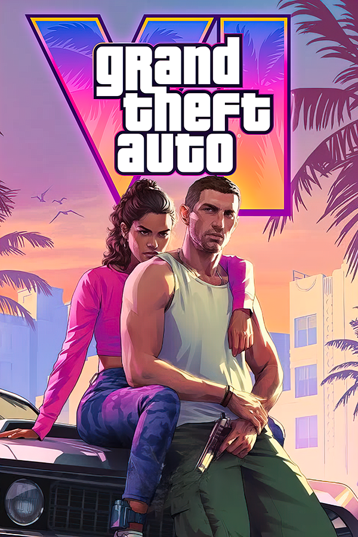

|  | |
| Playtime | 52m 4s |
| Last Activity | Never |
| Added | 5/3/2025 0:23:12 |
| Modified | 5/3/2025 0:27:46 |
| Completion Status | Not Played |
| Library | Playnite |
| Source | |
| Platform | $PC (Windows) |
| Release Date | 5/26/2026 |
| Community Score | |
| Critic Score | |
| User Score | |
| Genre | Adventure Racing Shooter |
| Developer | |
| Publisher | Rockstar Games |
| Feature | Co-Operative Multiplayer Single Player |
| Links | Wikipedia Official website |
| Tag | |
Grand Theft Auto VI is an upcoming video game in development by Rockstar Games. It is due to be the eighth main Grand Theft Auto game, following Grand Theft Auto V (2013), and the sixteenth entry overall. Set within an open world—the fictional U.S. state of Leonida, based on Florida—and its Miami-inspired Vice City, the story is expected to follow the criminal duo of Lucia and her male partner.
Following years of speculation and anticipation, Rockstar confirmed in February 2022 that the game was in development. That September, footage from unfinished versions was leaked on the internet in what journalists described as one of the biggest leaks in the history of the video game industry. The game was formally revealed in December 2023 and is scheduled to be released on 26 May 2026 for the PlayStation 5 and Xbox Series X/S.
Grand Theft Auto VI is set in the fictional open world U.S. state of Leonida—based on Florida—which includes Vice City, a fictionalised version of Miami. Vice City was previously featured in Grand Theft Auto (1997) and as the main setting of Grand Theft Auto: Vice City (2002) and Grand Theft Auto: Vice City Stories (2006). The game world parodies contemporary American culture, with satirical depictions of social media and influencer culture, and references to Internet memes such as Florida Man. The story follows a criminal duo: Lucia, the series's first non-optional female protagonist, and her male partner; the first trailer depicts Lucia as a prison inmate, and later evading custody with her partner.
Rockstar Games began preliminary work on Grand Theft Auto VI in 2014 after Grand Theft Auto V's release, and principal development started after Red Dead Redemption 2's release in 2018. During its production, the game was code-named Project Americas. Jason Schreier reported the game was "a moderately sized release" that would expand over time to avoid its predecessors' developer crunch, and that it would feature two Bonnie and Clyde–inspired protagonists, including a Latina woman, and "a significant online mode" akin to Grand Theft Auto Online. He claimed the developers were cautiously subverting the series's trend of joking about marginalised groups. In 2018, The Know reported that the game would be set primarily in Vice City and partly in South America, and in 2021, Tom Henderson claimed its map could evolve akin to Fortnite.
The game became highly anticipated in the years before its announcement, and journalists noted some fans became frustrated by Rockstar's continued silence, particularly after they announced a re-release of Grand Theft Auto V in 2020. An individual referencing the game received media attention for interrupting several live stage and television shows. On 4 February 2022, Rockstar confirmed development was "well underway". In July, Rockstar announced Red Dead Online would not receive more major updates as development resources were withdrawn to focus on the upcoming game; industry sources stated Rockstar reallocated resources after planned remasters of Grand Theft Auto IV (2008) and Red Dead Redemption (2010) were paused due to the backlash received by Grand Theft Auto: The Trilogy – The Definitive Edition (2021).
Schreier reported in February 2024 that Rockstar requested employees cease remote work and return to offices full time from April "for productivity and security" as development entered its "final stages". The Independent Workers' Union of Great Britain criticised Rockstar for contradicting their promise to maintain flexible working conditions; some employees were concerned it could negatively impact staff health and morale and prompt resignations and crunch conditions. In March, Kotaku's Zack Zwiezen reported the decision was partly to avoid a delay, though other journalists said the game remained "on schedule" and Rockstar's parent company Take-Two Interactive confirmed the game was scheduled for late 2025. In May 2025, Rockstar announced the game was delayed to 26 May 2026.
Anticipation surrounding the game spawned an internet meme indicating bemusement that other surprising events occurred "before GTA 6". It won Most Wanted Game at the Golden Joystick Awards and Most Anticipated Game at the Game Awards in 2024. Several publishers awaited a release date announcement before scheduling their own games, with others prepared to reschedule to avoid potential competition with Grand Theft Auto VI. Some are hoping it is sold for US$80 to $100—more than the standard $70—as it would prompt industry-wide changes, but analysts consider it unlikely. The research firm Circana predicted the launches of Grand Theft Auto VI and the Nintendo Switch 2 could allow the video game market to "rebound" with record consumer spending; DFC Intelligence projected sales of 40 million and earnings of $3.2 billion in the first year—twice as much as Grand Theft Auto V, which had the highest-grossing game launch—including $1 billion in preorders.
In November 2023, Sam Houser, the president of Rockstar Games, announced the first trailer would release in early December to celebrate the company's 25th anniversary. Within five hours, the announcement on X (formerly Twitter) surpassed two previous posts about the game to become the platform's most-liked gaming-related post, later surpassed by Rockstar's post announcing the trailer's 5 December release date, with 1.8 million likes in 24 hours. Other developers imitated the announcement's formatting to promote their trailers. On 4 December, a low-quality version of the trailer was leaked on X; in response, Rockstar published the official version on YouTube, revealing the title, protagonists, setting, and 2025 release window for the PlayStation 5 and the Xbox Series X and Series S.
The trailer broke the record for most first-day views on a non-music YouTube video within 12 hours, with 46 million, and, within 24 hours, became the third-most-viewed overall, with 93 million, and most-liked game trailer, with 8.9 million. It surpassed the lifetime viewership of Grand Theft Auto V's 2011 reveal trailer within two days, with 101 million views, and became the second-most-viewed game trailer by January, with 168 million. Its featured song, Tom Petty's "Love Is a Long Road", saw a near-37,000 per cent increase in Spotify streams, had almost 250,000 searches on Shazam, and ranked second on the worldwide iTunes chart. The trailer spawned fan-created recreations in other video games, as a brickfilm, and in live-action by the Hyundai World Rally Team.
On 18 September 2022, a user known as "teapotuberhacker" published 90 videos to the website GTAForums showing 50 minutes of work-in-progress game footage. Schreier confirmed with sources at Rockstar that the footage was genuine, and The Guardian reported it was from several stages of development, with some videos about a year old. The footage revealed a modern-day Vice City setting, contained animation and gameplay tests, level layouts, and character conversations, and depicted the player characters, Lucia and Jason, entering a strip club and robbing a diner. The hacker claimed to be responsible for the Uber security breach from the prior week, said they had downloaded the files directly from Rockstar's internal Slack groups, and threatened to publish source code, assets, and internal builds of Grand Theft Auto V and VI.
Take-Two responded by submitting takedowns of videos showing or discussing the leaks hosted on YouTube, and contacted GTAForums and Reddit moderators to remove access. The hacker wrote they were "looking to negotiate a deal" with Rockstar or Take-Two. Journalists described the event as one of the biggest leaks in video game history; Schreier called it "a nightmare for Rockstar Games" which could limit employees' remote-work flexibility. The Jefferies Group analyst Andrew Uerkwitz called it a "PR disaster" that could potentially delay the game and diminish staff morale, but was unlikely to impact reception or sales. The Guardian noted the leaked footage was being widely criticised "by ill-informed users" due to its quality, despite not being representative of the final product. Some users erroneously claimed graphics and art assets are finalised early in game development. In solidarity, several developers shared work-in-progress footage of their games and some, including Cliff Bleszinski, Neil Druckmann, Rami Ismail, and Alanah Pearce, offered sympathies to Rockstar.
On 19 September, Rockstar confirmed the leak to be a "network intrusion" and lamented the manner in which the game was first demonstrated, but did not anticipate long-term effects on development. They disabled comments and replies on their social media accounts in the days following the leak. Take-Two added that steps had been taken "to isolate and contain this incident". Take-Two's share price dropped by more than six per cent in pre-market trading that day, but recovered during regular trading hours following their statement. Uber acknowledged the potential links to their security breach and noted they were working with the Federal Bureau of Investigation and the United States Department of Justice. They believed the hacker was affiliated with the group Lapsus$, which was thought to have breached companies such as Microsoft, Nvidia, and Samsung over the preceding year. Strauss Zelnick, Take-Two's chairman and chief executive officer, said the incident caused the companies to become more vigilant with cybersecurity and had impacted staff emotionally but business remained unaffected. Rockstar later claimed the incident cost the company $5 million and thousands of staff hours to recover.
A 17-year-old boy from Oxfordshire—identified as "teapotuberhacker" and a key member of Lapsus$—was arrested by the City of London Police on 22 September as part of an investigation supported by the National Cyber Crime Unit and American federal law enforcement. While on bail for hacking EE and Nvidia and under police protection at a Travelodge hotel, he breached Rockstar using a mobile phone, television, and an Amazon Fire TV Stick and threatened to release the source code in a Slack message to all Rockstar staff. Appearing before Highbury Corner Youth Court, he pleaded guilty to two counts of breaching bail conditions and not guilty to two counts of computer misuse. The case was referred to a higher court while the boy was remanded to a youth detention centre. In mid-2023, he stood trial at Southwark Crown Court for twelve offences, including six counts of computer misuse, three of blackmail, and two of fraud. He was deemed unfit to stand trial due to his autism; instead of assessing his guilt, a jury determined he had committed the acts. A judge placed him under an indefinite hospital order in December for being a high public risk as he expressed an intent to continue committing cybercrimes.
On 1 January 2025, a Reddit user posted a photograph and two videos of a PlayStation 5 development kit running the game, taken by a person who "worked at the Rockstar office for a few months" in mid-2021; the post was later deleted. Based on the office's surroundings, Eurogamer determined the photograph and videos were taken at Rockstar San Diego. Polygon's Ian Walker found no new information was revealed from the post, which he called the "worst leak of all time".